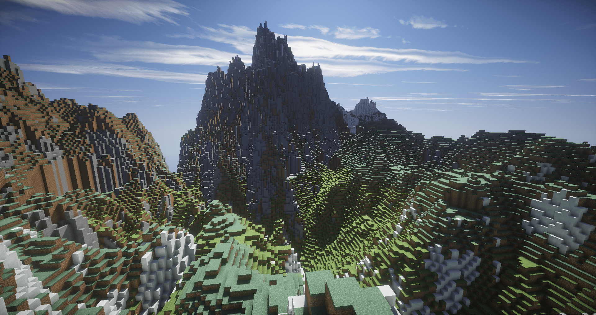

Hello
Welcome to jungle!
Take comfortable and write messadges to another users!
GoodBye! P.S. Yours admins
Minecraft info
Temperature
Biomes have a temperature value that determines if the water freezes or if it snows or rains. The required temperature values for snow and rain are less than 0.15 for snow and above 0.15 for rain. The temperature drops 0.00166666... units (1⁄600) per meter above the default sea level (Y=64), but does not change below sea level. The temperature and rainfall values of a biome are used when determining the colors of a small selection of blocks: grass, grass blocks, some leaves, vines, sugar cane. Blocks such as mossy cobblestone, mossy stone bricks, moss, dripleaves, glow berries and the stems of flowers are not affected by biome coloration[1]. The water color is affected by biome coloration but it's not based on temperature and instead is set by a color code, and the water color of each biomes varies between versions. In Java Edition most biomes have a default water color with the exception of swamps and oceans while in Bedrock Edition most biomes have unique water colors.
These values can be used to determine the heights that snow generates at in different biomes. For example, windswept hills begin to generate snow at around y=120, due to their highland climate, as their temperature value is 0.2, the temperature affects only the transition from rain to snowfall. All the biomes in vanilla with a temperature above 0.95 (and by extent, all the dry biomes) are hardcoded to never have precipitation at any height or temperature. For example, savannas do not experience rain or snow due to their dryness. If a biome with a temperature above 0.95 is edited to allow precipitation through a data pack or mod, it simply behaves like a normal rainy biome.
